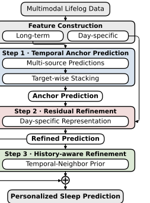
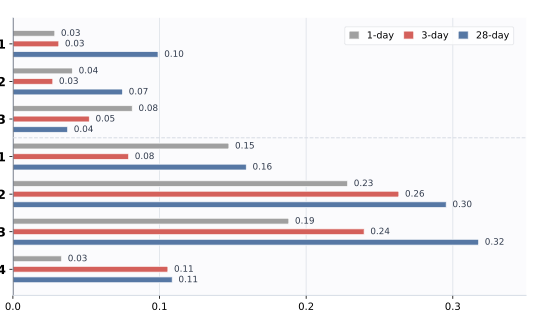
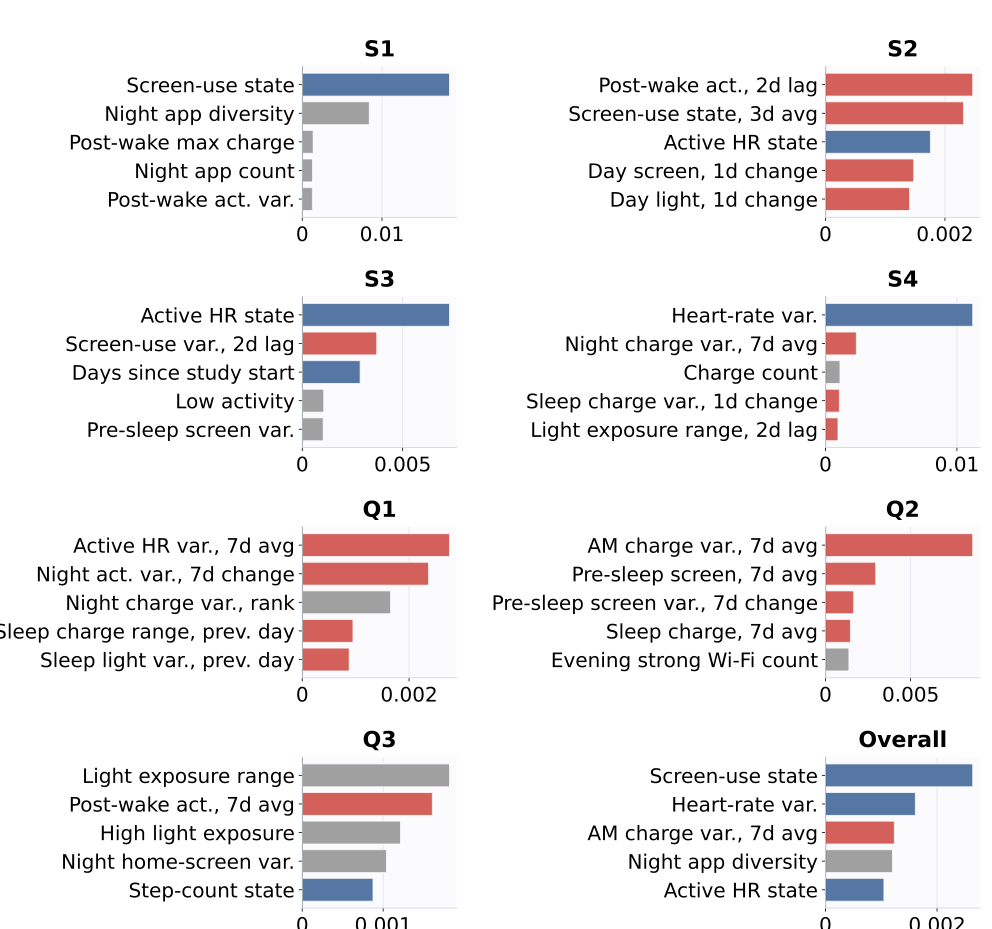

Long-Term Features
Rolling windows, cumulative history, same-weekday statistics, personal baselines, and missingness history.
Lifelog-based sleep prediction
SOLAR anchors sleep predictions on long-term personal history, then refines them with target-day sensor changes and history-aware calibration.
Existing lifelog sleep predictors often rely on daily observations or short-term statistics. SOLAR separates stable long-term states from day-specific variations, making the model better suited to personalized sleep outcomes from smartphone and wearable records.
Rolling windows, cumulative history, same-weekday statistics, personal baselines, and missingness history.
Target-wise anchor predictions are corrected by residual learners focused on prediction-day deviations.
Temporal-neighbor records from the same participant are used when they improve target-specific calibration.
The framework combines long-term state construction, personalized temporal anchoring, day-specific residual refinement, and target-wise history-aware adjustment.

Generate a personalized temporal anchor from historical target behavior, calendar patterns, and long-term sensor state.
Estimate residual corrections from target-day sensor state and deviations from the participant's long-term baseline.
Apply target-specific history-aware refinement only when temporal-neighbor evidence improves validation performance.
Experiments use the public CH-2025 benchmark with about 450 daily records from ten subjects and seven sleep targets. Performance is reported as average log-loss, where lower is better.
Best score against CatBoost, LightGBM, XGBoost, and SCH_CSM baselines under the same pipeline.
| Model | Test ↓ |
|---|---|
| CatBoost | 0.6053 |
| LightGBM | 0.6316 |
| XGBoost | 0.6985 |
| SCH_CSM | 0.6017 |
| SOLAR | 0.5560 |
| Configuration | OOF ↓ | Test ↓ |
|---|---|---|
| SOLAR w/o step 2 + 3 | 0.5815 | 0.5642 |
| SOLAR w/o step 3 | 0.5807 | 0.5626 |
| SOLAR | 0.5760 | 0.5560 |
| Configuration | OOF ↓ | Test ↓ |
|---|---|---|
| SOLAR w/o long-term | 0.5818 | 0.5739 |
| SOLAR | 0.5760 | 0.5560 |
Long-term features are especially useful for objective sleep indicators. SHAP density is consistently higher for long-term features across S1-S4, and LIME highlights long-term state features in local explanations.

| Target | Long-Term Density | Short-Term Density |
|---|---|---|
| Q1 | 0.52 | 0.77 |
| Q2 | 1.79 | 1.09 |
| Q3 | 0.69 | 0.92 |
| S1 | 4.14 | 0.64 |
| S2 | 5.97 | 0.88 |
| S3 | 5.68 | 0.69 |
| S4 | 6.13 | 0.84 |
